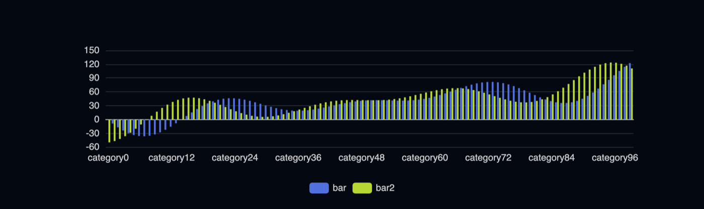
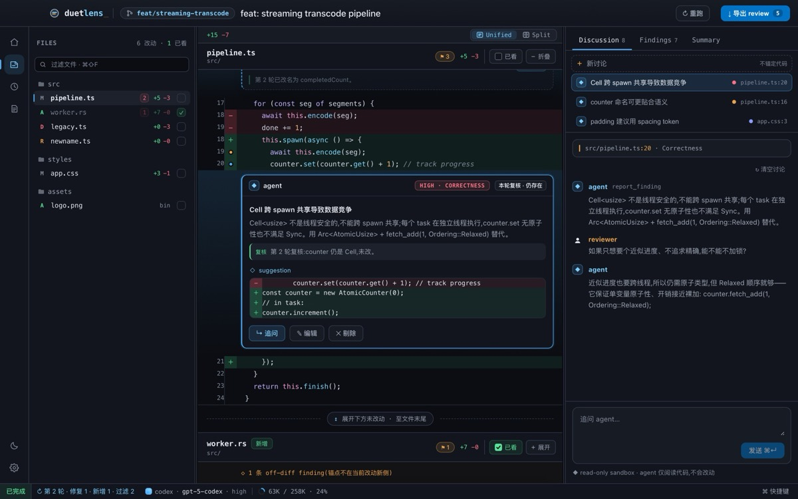
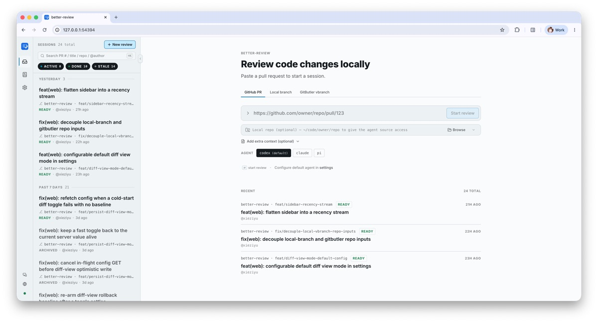

千里之行，始于足下
A journey of a thousand miles begins beneath one's feet. Laozi, Tao Te Ching 老子《道德经》
What arises, arises from the mind. Be at ease with what comes; hold on to nothing.
缘由心生随遇而安
身无挂碍一切随缘
Projects
ngx-echarts
An Angular directive for Apache ECharts. Declarative, reactive charts from a single attribute. Apache ECharts 的 Angular 指令，一个属性就能声明出响应式图表。

1.08M
npm installs last month 上月 npm 下载量

duetlens
See what every change really does, with an agent. 和 agent 看透每一处改动。

better-review
Local-first PR review. Drives claude or codex, ships findings through gh. 本地优先的 PR review，驱动 claude 或 codex，用 gh 提交结论。
angular2-draggable
A directive that makes any element draggable and resizable. Archived. 让任意元素可拖拽、可缩放的指令。已归档。
109K
npm / month npm 月下载
Ziyu
Engineer at Mediocre Company, working on 小宇宙 and 即刻. Mediocre Company 工程师，做小宇宙和即刻。